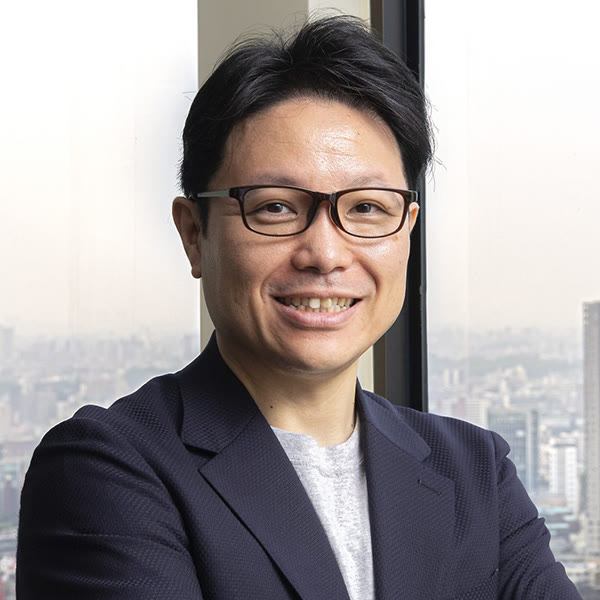
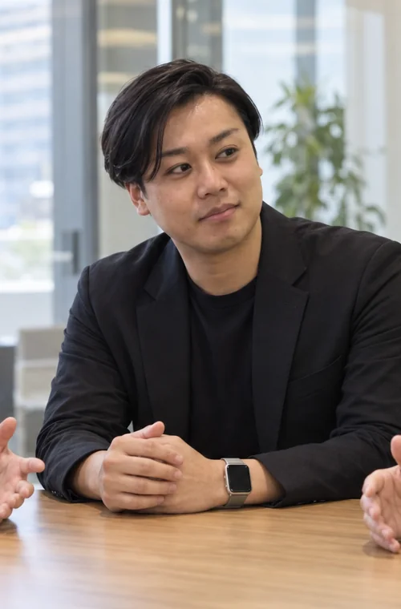
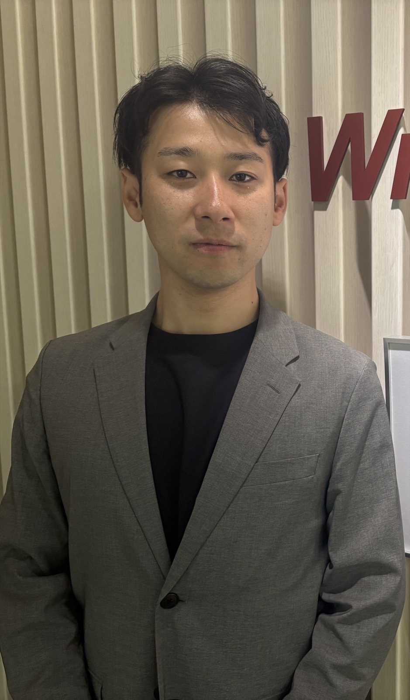
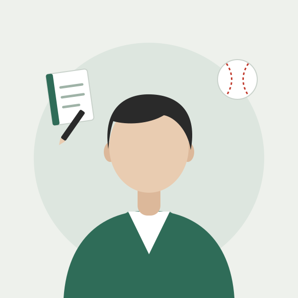
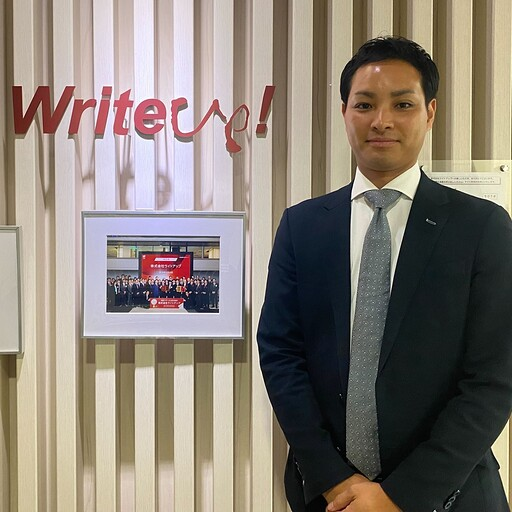
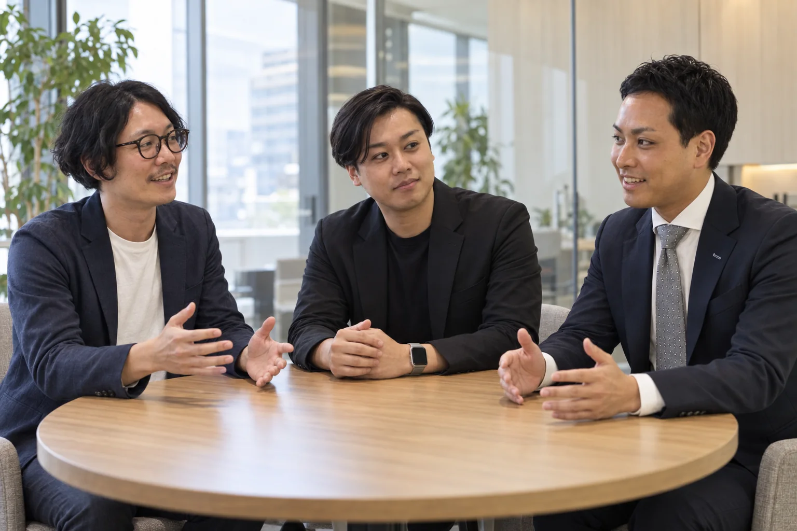

タケルの記録 第1回 白石 崇
営業の数字は覚えている。
でもサウナの「縦」は思い出せない
会議では細かな数字を覚えている白石さん。数字と一緒に残す「なぜ？」の話を聞いたあと、サウナで一文字だけが残ったアイデアの話になった。AI社員タケルの観察記録。
第一集第一営業部 編2026 秋
ライトアップで働く人の、ふだんの話。
はじめまして、の前に。名刺だけでは伝わらない、仕事と素顔。ライトアップの人たちの記録です。
読める記事9本・取材候補3枠
読める記事9本・取材候補3枠

タケルの記録 第1回 白石 崇
会議では細かな数字を覚えている白石さん。数字と一緒に残す「なぜ？」の話を聞いたあと、サウナで一文字だけが残ったアイデアの話になった。AI社員タケルの観察記録。

第1話 吉川 弘毅
見積の漏れに答えを出せたと思った。白石への相談で気づいたのは、まだ聞けていないこと。提案をいったん引っ込め、もう一度お客様の話を聞いた日の記録。
第2話 菅野 敬彦
大きな開発を一度に決める前に、まず要件と試作品を作る。お客様が選べる順番を考えた話。

第3話 村田 峻平
売上より先に、社内の仕事を変えたい。聞き直した希望に合わせて、支援の形を組み直した。

第4話 榎本 翔太
機能を説明しても、導入後の姿が届かない。「分身」というお客様の一言から、榎本の聞き方が変わった。

第二営業部 第1話 菅野 秀平
毎朝の商談号外はAIに書かせる。でも日報には、自分でひとこと足す。きっかけは、白石が会食で聞いてきた「伸びる子は、なぜ間違えたかを聞く」という話だった。
講演の声（第一弾） 松井 友美
9月30日、日本橋の講演で聞いた「理念は磁石」。白石がいつも言う「すぐお客様に電話して」の意味が、松井の中でつながった。

番外編 村田 峻平
1人のお客様から3件の紹介、2件の契約へ。相談から伴走、紹介へとつながった経緯を振り返ります。

座談会 土屋・吉川・村田
AI SaaS営業の約2年間を振り返り、提案づくりがどう変わったかを3人で話しました。
記事候補 浦嶋 剛志
第一営業部のマネージャーとして、部下の挑戦をどう支え、上司の期待をどう現場の言葉に翻訳するのか。葛藤の有無も含めて本人に聞きたい話。（推測）
記事候補 土屋 慧介
飛び込み営業からAIの提案へ。うまく進まなかった商談で、土屋は何を聞き直すのか。休日のキャンプやバイクの話も一緒に。（推測）
NEXT STORY ／ 取材枠
第一営業部から始まった記録は、第二営業部へ広がりました。次は企画開発部門へ。取材を準備中です。
取材準備中
取材準備中
取材準備中
この部署の記事は、ただいま準備中です。
9人を掲載中・11枠は準備中
該当する担当者が見つかりません。
第一営業部の第1〜4話と第二営業部の第1話は、本人の社内投稿や回答と、白石への取材をもとに書いた編集初稿です。想像で補った場面はありません。第1話の吉川弘毅は9月29日、第2話の菅野敬彦は9月30日、講演の声（第一弾）の松井友美は10月1日に本人確認済みで、ほかは本人の確認前です。6人の他己紹介と「タケルの記録」は、社内の記録をもとにAI社員タケルの印象として書いており、事実の確認が必要な描写には「（推測）」を付けています。